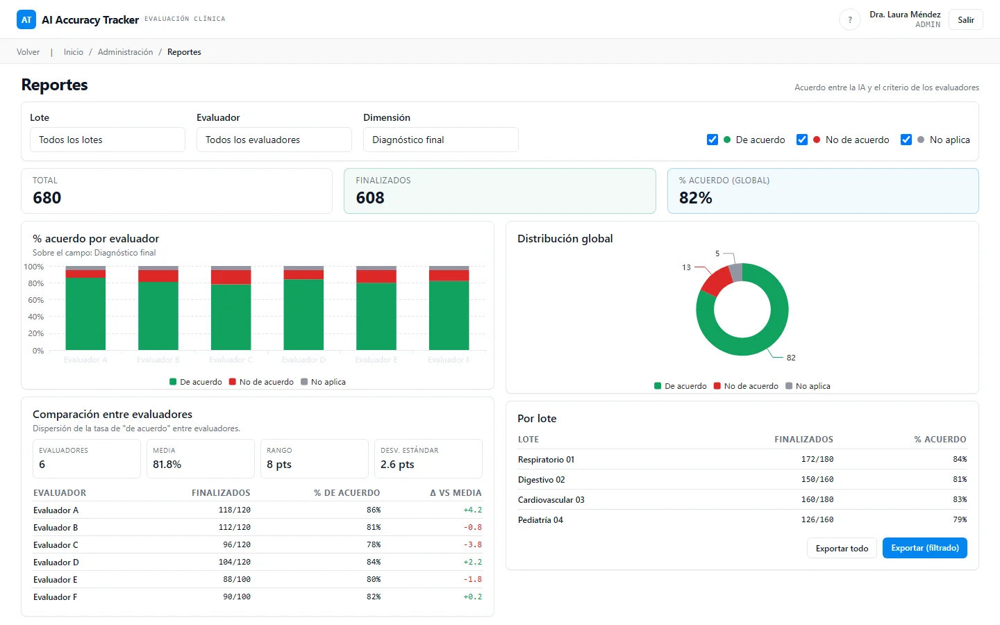
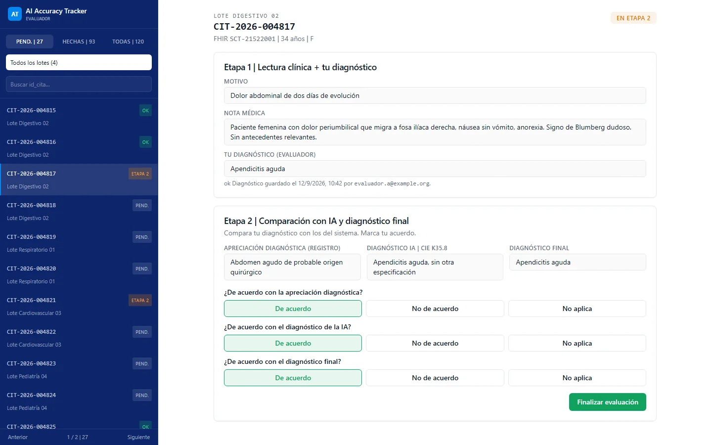
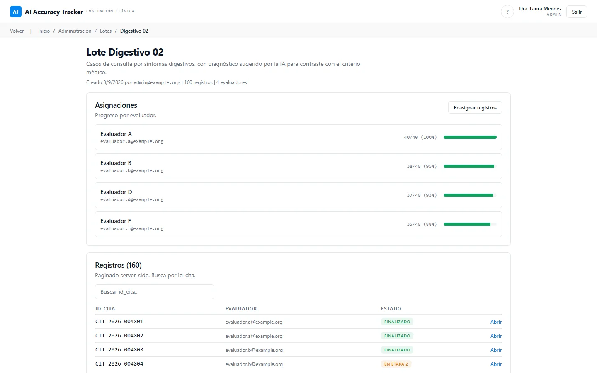

Seguimiento de la precisión de la IA clínica
Aplicación web que mide, caso por caso y bajo revisión médica, con qué frecuencia se sostiene una sugerencia diagnóstica de la IA.
- 75 a 90%concordancia entre la IA y los evaluadores
- 5,000 a 50,000casos evaluados
- 6 a 20evaluadores médicos
En uso en rondas de evaluación. Cifras reportadas en 2026. Ver las pantallas
Problema
Un servicio nacional de telemedicina pública utiliza un modelo de IA que sugiere diagnósticos a partir de la nota clínica de una teleconsulta. Para confiar en esa sugerencia, o para mejorarla, el servicio necesita una base de evidencia: en miles de casos reales, ¿qué concluyó un médico por su cuenta y estuvo de acuerdo con la sugerencia de la IA y con el diagnóstico final registrado?
Esa evidencia necesita trazabilidad. Cada juicio debe poder atribuirse a un evaluador, el diagnóstico propio del médico no debe sesgarse por haber visto primero la respuesta de la IA, y los resultados deben poder contarse por evaluador, lote y nivel de concordancia. Una hoja de cálculo que circula entre revisores no puede garantizar nada de eso.
Solución
Una aplicación web basada en roles con un flujo de evaluación en dos etapas:
- Un administrador importa un lote de casos desde un CSV (el importador asigna las columnas con flexibilidad, de modo que archivos de distintas fuentes se cargan sin reformatearlos a mano) y los distribuye de manera uniforme entre los evaluadores, con ajuste manual.
- Primera etapa: el médico evaluador ve los datos clínicos y escribe su propio diagnóstico. Al guardar, queda bloqueado.
- Segunda etapa: se revelan la sugerencia de la IA, la valoración de referencia y el diagnóstico final, y el médico registra si está de acuerdo, en desacuerdo o si no aplica en cada uno. Al guardar, el caso queda finalizado.
- Los administradores pueden revisar y corregir cualquier caso (las ediciones quedan registradas con quién y cuándo). Los reportes desglosan los resultados por evaluador, lote y nivel de concordancia, con exportación a CSV.
Las reglas de negocio (máquina de estados del registro, permisos, distribución de lotes, mapeo de CSV, métricas de los reportes) viven en una capa de dominio pura cubierta por pruebas unitarias. El diseño está preparado para escalar a lotes muy grandes: importaciones por fragmentos, consultas agregadas y exportaciones en flujo continuo.
Impacto
Las cifras son rangos, a agosto de 2026:
- Concordancia reportada entre la sugerencia de la IA y los evaluadores médicos: 75 a 90 por ciento.
- Casos evaluados: 5,000 a 50,000.
- Evaluadores médicos: 6 a 20.
El valor es una cifra defendible: cada porcentaje se rastrea hasta juicios médicos individuales registrados en un orden fijo.
Mi rol
- Levanté el requerimiento y el dominio con el área solicitante y los convertí en una especificación escrita.
- Diseñé las pantallas y el flujo de evaluación.
- Desarrollé la aplicación con asistencia de IA, siguiendo un plan escrito y registros de decisiones.
- Preparé la entrega: contenedores, configuración, guía de despliegue y documentación.
Stack
- Next.js 15.5.19 (App Router, Server Actions), React 19.2.7, TypeScript.
- PostgreSQL 16 (imagen de contenedor
postgres:16-alpine), Prisma 6.19.3. - Auth.js (next-auth) 5.0.0-beta.25 con credenciales; contraseñas protegidas con hash bcrypt.
- Zod, React Hook Form, TanStack Query y Table, Recharts, shadcn/ui con Tailwind CSS.
- Vitest 2.1.9 para pruebas unitarias, Playwright 1.60.0 para pruebas de extremo a extremo, ESLint, Prettier, Husky y commitlint.
- Node 22, pnpm 9.12.0, Docker; destino de despliegue documentado: Cloud Run con un PostgreSQL sin servidor.
Humano en el circuito en este proyecto
Las rutas de evidencia que aparecen abajo corresponden a repositorios privados y se muestran como texto plano.
- El producto mismo es un diseño con humano en el circuito: el médico confirma su propio diagnóstico antes de que se revele la respuesta de la IA (
HANDOFF.md, flujo de evaluación). - Decisiones registradas con sus motivos y las alternativas descartadas:
docs/adr/0001-stack-y-arquitectura.md,docs/adr/0002-estrategia-datos-a-escala.md. - Reglas de negocio aisladas y probadas:
src/domain/registro/estado.tsconestado.test.ts,src/domain/permisos.tsconpermisos.test.ts,src/domain/asignacion/distribuir.test.ts. - Compuerta antes de integrar los cambios:
.husky/pre-commit,commitlint.config.cjs,.github/workflows/ci.yml. - Traspaso y guía operativa:
HANDOFF.md,DEPLOY.md,docs/replicar-despliegue-cloud-run.md.
Estado
En uso en rondas de evaluación. El repositorio documenta una ruta de despliegue (imagen de contenedor, flujos de CI/CD, guía operativa); el estado exacto en producción no se publica.
Pantallas



La información de estas pantallas ha sido anonimizada.